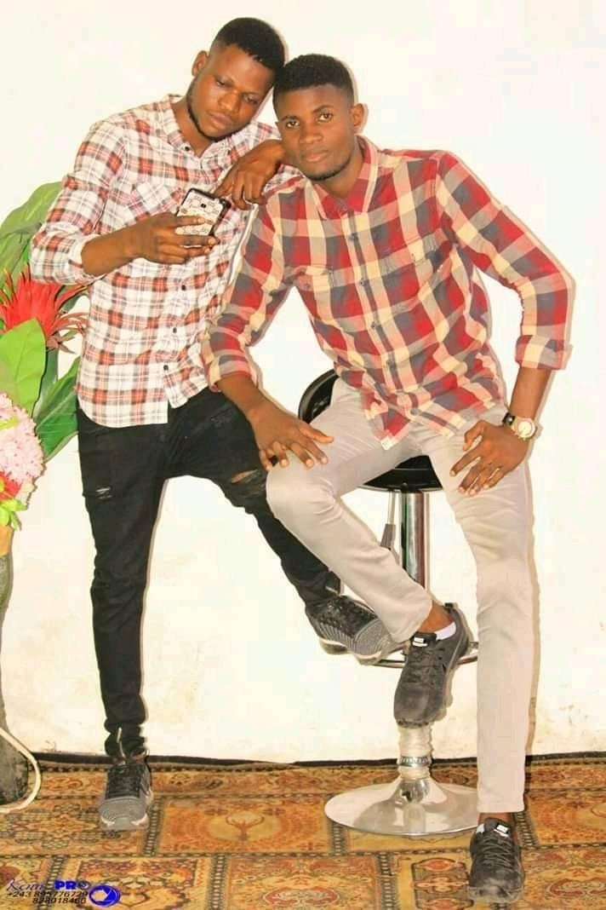
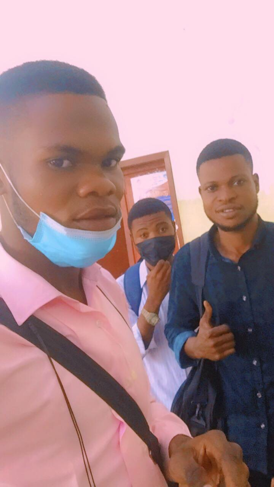

Je me suis intéresé de ma première année et ma premiére fois d'avoir créer un site web à l' unniversité de kinshasa (UNIKIN) dans la faculté des sciences, département des mathematique,statistique et informatique grâce au monsieur le professeur Saint Jean Djungu d'avoir partager sa connaissance à nous les étudiants de L2 LMD informatique
Je suis Joel Mwamba Ngwaba, étudiant à l'université de Kinshasa (UNIKIN) dans la faculté des Sciences, Département des Mathématiques, Statistiques et Informatiques. Je suis né dans une famille composée de six (6) enfants dont quatre garçons et une fille; et moi je suis quatriéme née de la famille.
Je suis né à Kinshasa le 25 Février d'une certaine année.
Identité complète
-

Etudes faites
J'ai fait mes études primaire à l'école primaire à MWANDA, c'est par là que j'ai eu mon certificat d'étude primaire à l'année scolaire 2009/2010; de premier cycle d'orientation à troisiémes des humanités j'ai étudié à l'institut BANZA et de troisiémes à sixième des humanités j'ai étudié en l'Institut Scien BANZA. Et c'est par là que j'ai obtenu mon diplome d'Etat à l'année scolaire 2015/2016 en Biologie-Chimie.
-

Formations
*Je fais la Bureautique Informatique au centre de formation CECONTEC dont les modules suivants: Initiation, Word, Excel, Publisher, PowerPoint
-

Compétences
Voir mon CV en pdf
Mes objectifs et mes désirs
En tant que tout autre humain, je compte devenir un jour un grand programmeur et grand Web master et mon objectif est aussi de servir la nation congolaise tôt ou tard dans le domaine informatique.
J'aime trop le football,documentaire j'aime aussi précher la bonne la nouvelle du royaume.
Photos